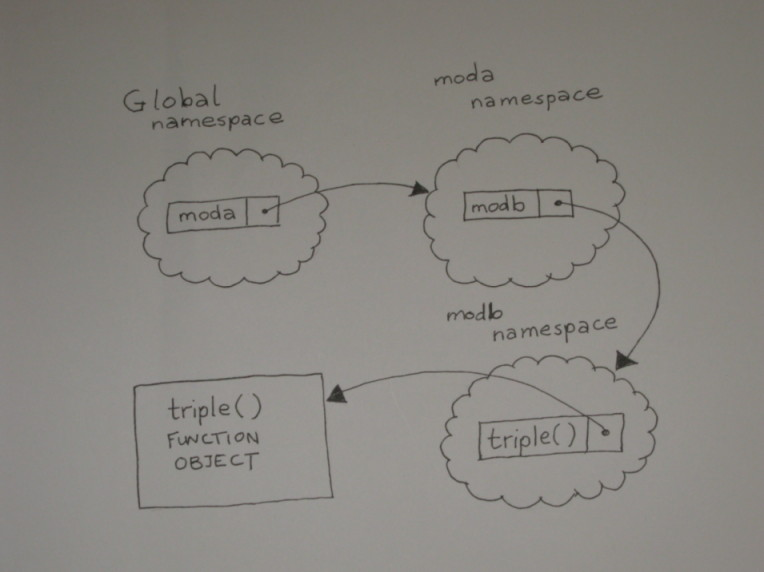
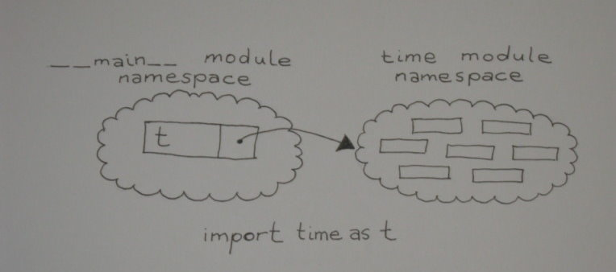
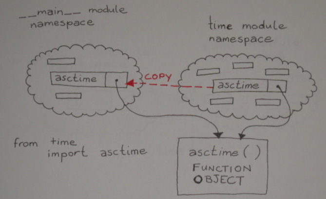

Let's get to work and discuss a key concept in programming, the principle of modularity. The idea behind it is that unrelated parts of a system should be kept separate from each other, and related parts should be grouped together.
Python comes with a large set of library modules and packages (we'll talk more about packages in a later course—they're like modules, but with a bit more structure). It's well worth learning about the standard library because it contains modules that can save you time and effort, and also allow you to do some really cool stuff with Python.
Let's try a few experiments using the standard library. First we'll figure out how to import a Python library module. Type the commands shown below in an interactive session:
>>> import textwrap
>>> textwrap.wrap("This is a very long piece of text. This should appear as shorter lines.", 12)
['This is a', 'very long', 'piece of', 'text. This', 'should', 'appear as', 'shorter', 'lines.']
>>> import time
>>> time.time()
1781246797.714785
>>> time.gmtime()
time.struct_time(tm_year=2026, tm_mon=6, tm_mday=12, tm_hour=6, tm_min=46, tm_sec=37, tm_wday=4, tm_yday=163, tm_isdst=0)
>>> time.asctime(time.gmtime())
'Fri Jun 12 06:46:37 2026'
>>> import base64
>>> s = base64.encodebytes(b"This is a byte string")
>>> s
b'VGhpcyBpcyBhIGJ5dGUgc3RyaW5n\n'
>>> base64.decodebytes(s)
b'This is a byte string'
| Modern Python | The original session showed base64.encodestring() and
base64.decodestring() producing DeprecationWarning messages.
Both functions were removed in Python 3.9; the replacements are
base64.encodebytes() and base64.decodebytes(),
which have been the preferred names since Python 3.1. The session above uses only the current names.
Likewise, the time.time() and time.gmtime() values shown are from the
current interpreter and will differ from what you see when you run the session yourself. |
Here you made use of functionality from three standard library modules—textwrap, time, and base64. We have linked the name of each module to the appropriate section of Python's standard library documentation. You get access to the resources of a module by qualifying the module's name with the name of the appropriate resource. So "a.b" means "look in a's namespace and return what is bound to the name b there."
The DeprecationWarning message is in our code to remind those programmers using earlier versions of Python that our strings are now Unicode. In older versions, strings were by default made up of ASCII (8-bit) characters. In Python 3, the base64.encodestring() function has been renamed base64.encodebytes(). The old name is still available, but not for long, so a message is printed to alert programmers to use the newer name.
Earlier, we discussed Python's object space, the location where data objects like integers and strings are stored. We also learned that when you run a program, the interpreter creates a namespace. Within namespace, values in object space are bound to names by assignment statements, function definitions, and such.
A Python program has a "global" namespace, where names are bound by assignments and function definitions within the main body of the program. When you call a function, Python dynamically creates a new namespace and binds the argument values to the parameter names. Assignments made during execution of the function call (normally) result in bindings in the function call ("local") namespace. When the function returns, the namespace is automatically destroyed, and any bindings inside the namespace are lost. On occasion, this means that some of the values will no longer have references. When that happens, the memory used to store those values becomes reclaimable as garbage. (Don't worry if you don't have a grip on all of this stuff just yet. It'll make more sense when we get to the experimentation!)
When we write large programs "monolithically" (as whole chunks), we may inadvertently use the same name for two different purposes at different places in the program. We can avoid that problem by incorporating the principle of modularity into our work; we'll write programs as collections of small chunks that are relatively independent of one another. This will also make our programs easier to read and understand.
With Python, we are able to construct many independent namespaces and handle them separately. The same name can be defined in two different namespaces, because the uses don't collide. When the interpreter looks for the value bound to a particular name, it looks in three specific namespaces. First, it looks in the local namespace (assuming a function call is active). Next, it looks in the global namespace. Finally, it looks in the "built-in" namespace, which holds the names of objects that are hard-wired into the Python interpreter, like exceptions and built-in functions.
A module is a collection of statements that are executed. Every program you have written so far in this course is a Python module. You wrote them as stand-alone programs. When you run a module as a program, the interpreter terminates after all of the code has been executed. Running the program is one way to cause its code to be executed. Another way is to import it. When you write import modx in your program, the interpreter looks for the modx.py file. It also looks for its compiled version: modx.pyc. If modx.pyc is up to date, it will save the interpreter the work of compiling it.
If the file is not found, an ImportError exception is raised. Otherwise, the interpreter executes the code in the module, and binds the module's namespace to the name of the module in the current namespace. So, if modx defines a function f(), after you have imported the module, you can call that function with modx.f()—the dot operator tells the interpreter to look up the name f in the namespace bound to the name modx.
Suppose module z defines function g(), module y imports module z, and your program imports module y. You could call the function as y.z.g(). The interpreter would look up y in the local namespace, retrieving the namespace of module y. Then it would look up z in that namespace, retrieve the namespace of module z, and in that namespace look up the name g and retrieve the function.
Okay, I think we've got enough to think about. Let's get busy with some practical application! We'll create a program called importer.py that imports a module called moda, that in turn imports a module called modb. The program is going to call a function defined in modb. Create the moda.py, modb.py, and importer.py programs, respectively, as shown:
"""moda.py: Imports modb to gain indirect access to the triple function.""" import modb
"""modb.py: Defines a function that can be used by importing the module."""
def triple(x):
"""Simple function returns its argument times 3."""
return x*3
"""importer.py: imports moda and calls a function from a module moda imports."""
import moda
print(moda.modb.triple("Yippee! "))
Save them all, and run the importer.py program. When it runs, it imports module moda. This binds the moda module's namespace to the name moda in the program's (global) namespace. When module moda is imported, its code is executed. This causes module modb to be imported, binding it to the name modb on module moda's namespace. When modb is imported by moda, its code is executed, and the def statement binds the name triple to the function definition in modb's namespace.
Now when the interpreter sees the statement print(moda.modb.triple("Yippee! ")), it looks up the name moda in the global namespace, then looks up the name modb in that namespace, and finally looks up the name triple in that namespace. This final lookup returns a reference to the triple function, which is then called with the argument "Yippee! " and your program will print "Yippee! Yippee! Yippee! ".
Yippee! Yippee! Yippee!
The namespace labeled "GLOBAL NAMESPACE" is actually the global namespace of the importer module run as the main program. This diagram shows the relationship between the namespaces of the various modules:

In later courses we will talk about testing code. But even before we start using the unittest module, we can start writing importable modules to do some basic testing.
When a module is imported by a program, the interpreter binds the special name __name__ in the module's namespace to its name. When a module is run as a program, __name__ receives a special value "__main__". You can assume that your module will be imported, but if it gets run as a program (that is, if __name__ == "__main__"), then the user isn't trying to use it, but instead wants to test it.
Some standard library modules have a section at the end that contains the statement:
if __name__ == "__main__"
The code that follows that statement is there to test the module's functionality.
We'll write code like that to test our functions as well, and make it easier to verify that they work as intended. The more you do to make your modules self-testing, the easier it is to detect when a small change has broken the code.
So far almost all of our programs have been made up of single program files. As the programs get more complex, we'll build them as collections of components. A component you build for one program might be useful in another. You could just copy the component's code, but then if you needed to modify it, you'd have to modify each copy separately. This makes extra work for you and increases the chance of errors.
Fortunately, Python lets you write your code as a collection of modules, each of which is a separate text file. This makes it easier to use your code in various contexts.
Let's take a program that uses functions and split it into two pieces. Create this program in the editor window:
"""Contains functions to manipulate number representations."""
def commafy(val):
if len(val) < 4:
return val
out = []
while val:
out.append(val[-3:])
val = val[:-3]
return ",".join(reversed(out))
def commareal(val):
if "." in val:
before, after = val.split(".", 1)
else:
before, after = val, "0"
return "{0}.{1}".format(commafy(before), after)
# Testing code only ...
if __name__ == "__main__":
for i in [0, 1, 12, 123, 1234, 12345, 123456,
1234567, 12345678, 123456789, 1234567890]:
print(i, ":", commafy(str(i)), ":", commareal("{0:.2f}".format(i/1000)))
Save it as funcs.py and run it.
The first module defines the required functions. The second produces results by calling one of the functions. It gains access to the function it needs by importing the module that defines it.
The commafy function takes a whole number (which is assumed to be a string comprising all digits) and, beginning from the right, splits it into chunks of three digits. The value string is shortened to remove each chunk after it is added to the out list. Any chunk of less than three digits that remains at the end will be captured automatically by slicing. When no digits remain, the out list is reversed to put the chunks in the correct order, and the chunks are joined together with commas to provide the function's return value.
The commareal() function takes a string representation of a real number or integer. If the string contains a decimal point, it is split around that. If there is no decimal point, a single "0" is used. The commafy() function is used to insert commas into the portion before the decimal point, and the output string is constructed from the "commafied" portion before the decimal point and the unchanged portion after the decimal point.
Although this module is designed to be imported by other programs, it will test itself if it's run as a main program. It iterates over a set of integers, printing out the number, its "commafied" version, and the commareal() value of the number divided by 1,000 and represented to two decimal places. When the module is imported, the condition if __name__ == "__main__" is false, so the testing code does not execute.
0 : 0 : 0.00 1 : 1 : 0.00 12 : 12 : 0.01 123 : 123 : 0.12 1234 : 1,234 : 1.23 12345 : 12,345 : 12.35 123456 : 123,456 : 123.46 1234567 : 1,234,567 : 1,234.57 12345678 : 12,345,678 : 12,345.68 123456789 : 123,456,789 : 123,456.79 1234567890 : 1,234,567,890 : 1,234,567.89
Now, create this program:
"""Take user input, convert to float, and print
out the number to two decimal places, with commas."""
import funcs
while True:
inval = input("Enter a number: ")
if not inval:
break
number = float(inval)
print(funcs.commareal("{0:.2f}".format(number)))
Save it as funcalls.py and run it. This program performs an infinite loop, terminated from within when the user presses Enter without typing a number in response to the "Enter a number" prompt. Otherwise, the user's input is converted to a floating-point number, and is formatted back into a string representation with two decimal places. The result of the commareal() function is printed back to the user (via funcs.py) before the loop repeats.
The import statement has some useful variations that can alter the way imported items are made available in the importing namespace.
What if you need to import a module, but you've already used its name in your code? You can avoid rewriting your code using the import ... as syntax, which allows you to import a module using a name of your choice rather than its natural name. So, if you write import time as t, the module is imported in the standard way, but rather than being bound to its standard name in the importing namespace, the module namespace is bound to the name t. Now you can write a call on the asctime() function in the module as t.asctime(), and continue to use the name "time" for other purposes.
The time namespace is now called t in the __main__ namespace:

Sometimes you'll just want to bring the names from a module into the importing namespace so they can be used directly rather than qualifying the module name. Do this sparingly though, because once you've done this, it becomes more difficult to locate various resources in the program.
An alternative way to handle situations where the name "time" is already in use, is to import the "asctime" name into the current namespace directly with from time import asctime, and write the calls on the function as asctime(). Because the __main__ namespace contains no direct reference to the time module, other names in time's namespace are not available to the __main__ module. The name asctime is copied from the time module's namespace to the __main__ namespace:

Under most circumstances, you do not want to use from ... import ... to import all names defined in a module using the statement from module import *. While this may seem like a great way to define the necessary symbols, it puts the imported module in charge of what gets loaded into your namespace. Unless you are really familiar with the imported module's code, you'll have no way of knowing whether it defined symbols that you're already using. If it did define them, they will overwrite your definitions or your symbols will overwrite the definition from the modules. Either way, you'll receive no notification that this has happened, and you will be left with a tricky debugging exercise.
Certain well-written and sophisticated library modules (such as the Tkinter graphical user interface library) recommend this form of import. Do not try to emulate this in your own designs—it is an invitation to disaster!
How does the interpreter know where to find modules? It looks for module modname by searching in a specific list of directories for a file called modname.py.
Let's look at the system path. It is defined, appropriately enough, in a module called sys. You have to import it before you can examine it. To see what's on the path, type the following commands in an interactive session:
>>> import sys >>> for p in sys.path: ... print(p) ... /opt/homebrew/Cellar/python@3.14/3.14.3_1/Frameworks/Python.framework/Versions/3.14/lib/python314.zip /opt/homebrew/Cellar/python@3.14/3.14.3_1/Frameworks/Python.framework/Versions/3.14/lib/python3.14 /opt/homebrew/Cellar/python@3.14/3.14.3_1/Frameworks/Python.framework/Versions/3.14/lib/python3.14/lib-dynload /opt/homebrew/lib/python3.14/site-packages >>>
| Modern Python | The paths shown above are from a Homebrew Python 3.14 installation on macOS. Your output will differ depending on your operating system, how Python was installed, and which version you are running. The original course showed Python 3.1.3 paths on a Linux server; what matters is the structure—a list of directories the interpreter searches in order. |
When the interpreter looks for a module, it searches these paths, starting at the top of the list, and stopping when it finds the module. This path can be useful to know if you have a program that doesn't seem to be finding the module you wanted it to find.
You're picking this stuff up like a pro! You've learned how your programs can make use of external functionality, and how you can split your own programs up to make them more modular. This will make them easier to manage, help you to write code that can be used in lots of different programs, and make you an efficient programmer! You'll reduce your work by reusing and recycling your code. In the next lesson, we'll revisit functions and learn about even more features. See you there!